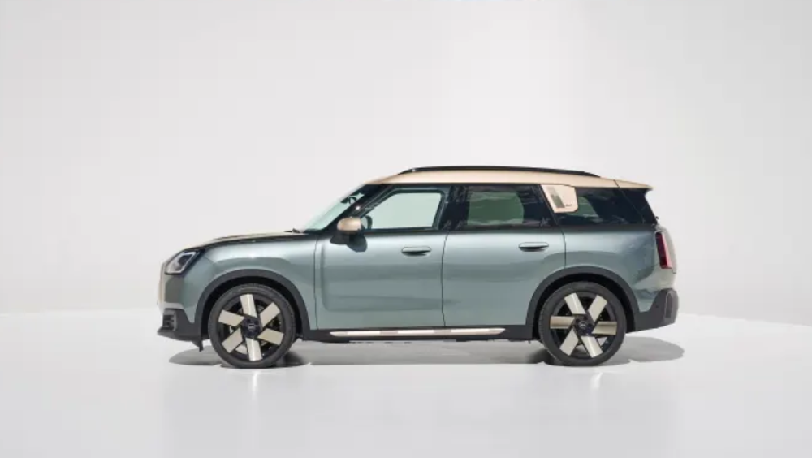
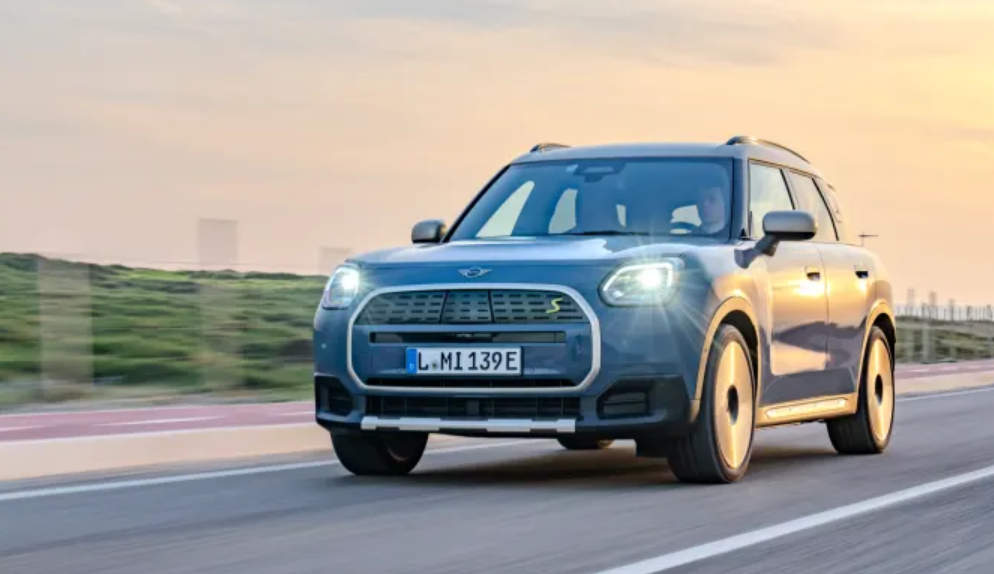

These three cars are symbols of British motoring, but their performance is owed to German influence.
Nathan Adlen Updated : Jan 13, 2025

Three iconic British brands are hiding a secret. Mini, Lotus, and Bentley all have past instances where they've relied on German powertrains for their models. With such non-British forms of motion, some might wonder if they still have the British feel they originally made headlines for all those years ago.
To an Anglophile like me, British design has a certain cache attached to it. For many Americans, British design combines hints of elegance, performance, grace, and that intangible element—character. Simply put, for many, British cars are usually pretty cool.
What happens when you take those elements and give them a German heart? This isn't a new phenomenon. Not only are foreign powertrains common, but having a German powertrain is usually a bonus. Some might say it changes the character of the vehicle, but is that always true?
Lotus Emira 2.0 I4 Turbo First Edition
Yes, the Lotus Emira has a Toyota-sourced V6, but there is another engine available as well in the form of a 400-horsepower, turbocharged, AMG-sourced four-cylinder. For the uninitiated, AMG stands for Aufrecht, Melcher, and Großaspach, the names of the three German engineers who founded the Mercedes-AMG performance division in 1967. AMG was recently fully integrated into the Mercedes-Benz family and will continue to be responsible for high-performance variants and racing powertrains.
The power is channeled to the rear wheels via an eight-speed dual-clutch automatic with no manual transmission option. Fortunately, with this angry turbo, which is one of the most powerful 2.0-liter engines in its class, the little Lotus absolutely flies.
To say this version of the Lotus Emira is one of the best Lotus cars I’ve driven isn’t an exaggeration. Lotus products are usually a little rough around the edges, but this Emira is well-executed, comfortable, and easy to drive. Oh, and it’s wicked fast with that German heart. To say it dances like a ballerina wearing punching gloves isn’t too far off.
Mash the accelerator down, and you are rewarded with a savage growl mixed with the turbine howl coming from the turbo (which is right next to your ear). The power shoves you into your seat, and gear changes from that eight-speed DCT snap rapidly. The steering feel is nearly telepathic, and much of the driving experience is competitive with the Porsche 718 Cayman.
So, yes, it has a German-screaming heart, but it sure feels unique. Everyone compares its performance with that of the aforementioned Porsche, and for good reason. The Cayman is outstanding in many ways and may be a better buy for many. That said, the Lotus looks amazing and makes you feel special.
2025 MINI Countryman Electric
Before you say that all four-cylinder gasoline Mini Cooper engines are made at the Hams Hall Plant near Birmingham, I am referring to the Mini Countryman's electric powertrain and batteries, which are manufactured in Leipzig, Germany.
If you get the All4 variant of the Countryman, you get dual electric motors paired to a 64.6 kWh battery that put out a combined 308 hp and 364 lb-ft of torque. That much power is good for 0 to 60 mph times in the mid-five-second range. The EPA-estimated range is approximately 212 miles, but if you get the larger wheels, you will lose about 8 miles of range.
With a 130 kW fast charging capability and a relatively low 212-mile range, the Countryman Electric trails some competitors and may not be ideal for longer-distance drives. That being said, I still laud its feel, performance, and the way it keeps the Mini spirit alive.
Whenever Mini goes through a styling or mechanical change, many question the decision. When the 2025 Mini Countryman Electric hit the market, some wondered if it lost its soul but as a former Countryman owner, I can say that despite its larger size, it still has the soul of a Mini.
2025 Bentley Continental GT Speed
Some sneer and say Bentleys are Volkswagens, which is somewhat true, but that's not a bad thing. The Continental GT V8 has a twin-turbo 4-liter V8 engine developed jointly with Audi, and its most recent plug-in hybrid powertrain is shared with other Volkswagen Group vehicles, including the Porsche Panamera Turbo E-Hybrid.
The 2025 Bentley Continental GT Speed is a beast of a plug-in hybrid electric vehicle (PHEV). Its 25.9 kWh lithium-ion battery powers an electric motor that connects to the engine and sends 771 hp and 738 lb-ft of torque to all four wheels via an 8-speed dual clutch. This allows for a range of roughly 50 miles on electric power alone, or it can operate alongside its 4.0-liter twin-turbo V8 engine.
Some testers have seen a 0 to 60 mph time at or under 3 seconds, an impressive feat for a car that weighs just under 5,500 lbs. The GT Speed also has four-wheel steering and active suspension that all work together to give you an EV, a super sports car, or a luxury GT cruiser - all at the touch of a button.
Driving the 2025 Bentley Continental GT Speed is like nothing I've ever experienced with over two decades of automotive journalism under my belt. I struggle to classify the thing, as it has hints of its British lineage, but it feels more like a German car than I expected. Fortunately, it looks beautiful and brutish, with a ton of curb appeal. Its character isn't very British to me, but it sure is an amazing car altogether.
Final thoughts
This is the opposite of character assassination, as these vehicles are mostly better for their German hearts. On this side of the pond, many won't care where the power comes from as long as it impresses, and these vehicles do. Plenty of other vehicles sport powertrains from other automakers, and it's usually for a good reason.
In some ways, they may lose some of their British character. Perhaps some of them have a new character that isn't British or German. It's hard to say for sure. I will say this, though: each one of these cars is extraordinary in its own right. Be it design, performance, or character, they all make a good case for getting that mixed combo of fish n' chips with a smattering of bratwurst.